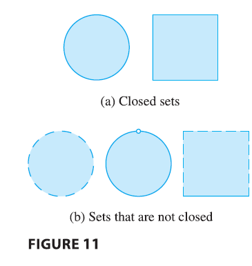

For a function \(f\) of one variable, the Extreme Value Theorem says that if \(f\) is continuous on a closed interval \([a, b]\), then \(f\) has an absolute minimum value and an absolute maximum value. According to the Closed Interval Method, we found these by evaluating \(f\) not only at the critical numbers but also at the endpoints \(a\) and \(b\).

There is a similar situation for functions of two variables. Just as a closed interval contains its endpoints, a closed set in \(\mathbb{R}^2\) is one that contains all its boundary points. [A boundary point of \(D\) is a point \((a, b)\) such that every disk with center \((a, b)\) contains points in \(D\) and also points not in \(D\).] For instance, the disk
\[ D = \{(x, y) | x^2 + y^2 \le 1\} \]
which consists of all points on or inside the circle \(x^2 + y^2 = 1\), is a closed set because it contains all of its boundary points (which are the points on the circle \(x^2 + y^2 = 1\)). But if even one point on the boundary curve were omitted, the set would not be closed.
A bounded set in \(\mathbb{R}^2\) is one that is contained within some disk. In other words, it is finite in extent. Then, in terms of closed and bounded sets, we can state the following counterpart of the Extreme Value Theorem in two dimensions.
Extreme Value Theorem for Functions of Two Variables If \(f\) is continuous on a closed, bounded set \(D\) in \(\mathbb{R}^2\), then \(f\) attains an absolute maximum value \(f(x_1, y_1)\) and an absolute minimum value \(f(x_2, y_2)\) at some points \((x_1, y_1)\) and \((x_2, y_2)\) in \(D\).
To find the extreme values guaranteed by Theorem, we note that, by a previous Theorem , if \(f\) has an extreme value at \((x_1, y_1)\), then \((x_1, y_1)\) is either a critical point of \(f\) or a boundary point of \(D\). Thus we have the following extension of the Closed Interval Method.
Steps to find Absolute Min-max
To find the absolute maximum and minimum values of a continuous function \(f\) on a closed, bounded set \(D\): 1. Find the values of \(f\) at the critical points of \(f\) in \(D\). 2. Find the extreme values of \(f\) on the boundary of \(D\). 3. The largest of the values from steps 1 and 2 is the absolute maximum value; the smallest of these values is the absolute minimum value.